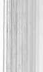

Aden gecelerini anlatamam sana. İnsanlar, sesler, kokular; özellikle de kokular... Eh, aslında ANLATABİLİRİM, ama miden bulanır. Sen en iyisi beni dinle. Aden, piknik yapmak isteyeceğin türden bir yer değil. Ama biz orada yaşamayı planlamıyorduk. Hele orada ölümle burun buruna geleceğimi hiç bilmiyordum...
Biz leş kokulu sokaklarında koştururken, Aden'in havası öncekinden de sisliydi. Bizden bir şey saklamaya çalışıyordu.
Kafamızı karıştırmak, kaybolmamızı sağlamak istiyordu. Aniden, şehrin istasyona ulaşmamızı ve gece yarısı
trenine binmemizi engelleyeceğinden korkmaya başladım.
Ama Storm Hanı'na ulaşmamızı engellemedi.
Birkaç kişi Teus'a merakla bakıyor, neden tabut taşıdığını merak ediyordu; ama kimse bizi durdurmaya kalkışmadı.
Kimse arkamızdan, "Hırsızları durdurun!" diye bakılmadı.
"Edward Amca," diye sordum, "Bay Mucklethrift, sen odadan çıkarken neden 'üzgünüm' dedi?"
128
" A h h h ! " diye içini çekti Edward Amca. U z u n adımlarla yürüyordu ve ona yetişmek için sekerek yürümek zorunda kalıyordum. "Sen Mucklethrift Malikânesi'ni... şey, keşfederken, oturma odasında küçük bir sorun yaşadık."
"Amcan konukları orada on dakika boyunca tutabilmek için çok çabaladı," dedi Teus.
"Demek istediğin, neredeyse yakalanacak mıydım? Ne oldu? Sör J o h n Moore'un Corunna'daki Cenazesi her zaman on dakika sürer," diye itiraz ettim.
"Ne yazık ki o şiiri okumama izin vermediler. Anladı
ğım kadarıyla, Sör J o h n ' u n kız torunu, konuklar arasın-daymış. İskelet İskeletor tabuttan fırladığında kadın altüst olmuş zaten. Sevgili yaşlı dedesinin öyküsünü anlatırsak bayılıvereceğini söyledi."
"Ee, ne yaptın o zaman?" diye sordum.
"Zerrinler'i okudum," dedi.
"Ama o on dakika sürmüyor ki," diye itiraz ettim.
"Biliyorum. Doldurmam gereken iki dakikalık bir boşluk kaldı.
Boynumu celladın ilmeğinden kurtarmak için
gereken iki dakika," diye inledi.
"Ya benim b o y n u m ? " diye sordum.
Edward Amca aksi aksi baktı. "Beni asarlarsa sen bu dünyada yapayalnız kalırsın. Açlıktan ölürsün. Hem de yavaş yavaş, acı çekerek ölürsün. BENİM boynumun kurtulması daha önemli.
Ben kurtulamıyorsam seni de asmaları daha iyi olur.
129
"Sağ ol amca," diye mırıldandım.
"Her neyse, biri 'İntikam' gemisinin batması hakkındaki şiiri o k u m a m ı istedi," diye devam etti.
"Bu yirmi dakika sürer," dedim.
"Kesinlikle. On koca dakika boyunca tabutun yanında oturup beklemen gerekecekti. Hırsızlığın ortaya çıkabileceği on dakika. Odadan çıkıp boyunlarımızı kurtarmalıydım."
"Ee, ne yaptın?"
"Onlara deniz hakkında bir şiir okuyamayacağımı, çünkü boğulma k o r k u m olduğunu söyledim. Mucklethrift Malikânesi'nde bile boğulma korkusu çektiğimi açıkladım.
Bir adam seslendi: Ama denizden üç kilometre uzaktayız!
Ben de yanıt verdim: Kesinlikle bayım ve bu, cankurtaran sandallarının yanıma gelmesini daha da güçleştiriyor!"
"Delirdiğini düşünmüşlerdir," diye güldüm.
"Belki düşünmüşlerdir, ama en azından senin ihtiyacın olan iki dakikanın geçmesini sağladı oğlum. Bir servet kazandık mı?"
Tam çaldığım şeyleri saymak üzereyken bir şeyin eksik Olduğunu fark ettim. Yol kavşağında durmuştuk. Benden de küçük bir çocuk, çalı çırpıdan yapılmış bir süpürge ile orada duruyordu. Güzel ayakkabıları olan insanlar geçebilsin diye, at pisliklerini lağım kanalına süpürüyordu.
Çevreme bakındım. Kesinlikle bir eksiklik vardı. Sonra ne olduğunu anladım.
130
Teus. Teus neredeydi?
"Amca!" diye bağırdım. "Tabut nerede?"
Amcam d u r d u ve çılgınca çevresine bakındı. "Hırsız!
Hain! Serseri! Hazinemizi alıp kaçtı. Ona güvenmememiz gerektiğini biliyordum zaten. Asla u z u n saçlı bir adama güvenme," diye inledi. Büyülü lambayı sol k o l u n u n altına sokuşturdu ve boş eliyle ceketimin yakasını kavradı. "Ona göz kulak olmalıydın Jim."
"Ben mi?" diye cıyakladım.
"Beni hayal kırıklığına uğrattın," dedi ve beni yavaşça kaldırdı. Burnuyla benim b u r n u m arasında bir el mesafe kalmıştı. "Bu numarayı birlikte çevirmiyorsunuzdur umarım. Bu zavallı yaşlı adamın dünyevi hazinelerini çalmak için çevirdiğiniz numaradan bahsediyorum."
Kızmıştım. Teus'a bizi kandırdığı için kızmıştım. Edward Amca'nın benden şüphe etmesine kızmıştım. Elinde kıvranarak, "Buraya bak!" diye bağırdım amcamın yüzüne. "Sen zavallı yaşlı bir adam DEĞİLSİN, sen orta yaşlı bir hır-sızsın. Bana ona göz kulak olmamı SÖYLEMEDİN. Ayrıca o senin dünyevi hazinelerini ÇALMADI. Bay Mucklethrift'in dünyevi hazinelerini bizden çaldı."
"Aynı şey oğlum," dedi ve beni bir tangırtıyla tahta kaldırıma bıraktı.
Küçük kavşak süpürücüsü ilgiyle bize baktı. "Siz hırsı mısınız? Mucklethrift Malikânesi'ni soymaktan mı geliyor-sunuz?"
131
"Geveze," diye inledim Edward Amca'ya.
"Ah, yo, küçük süpürgeci. Biz cenaze levazımatçısıyız, değil mi Jim?" dedi amcam, bana dönerek.
"Öyle miyiz?"
"Öyleyiz ve Mucklethrift Malikânesi'nden geliyoruz.
Yaşlı bir hizmetkâr ölmüş. Cesedini, h u z u r içinde yatacağı kiliseye götürüyorduk, değil mi Jim?"
"Götürüyor m u y d u k ? " diye b u r n u m u çektim. Hâlâ kızgındım.
"Götürüyorduk. Ve dikkatsiz tabut taşıyıcısı kaybolmuş gibi görünüyor," dedi Edward Amca.
"Siz hırsızsınız," dedi çocuk. "Ya bana para verirsiniz ya da Şerif Şerife sizi anlatırım. Gelmek üzeredir. Saat gibi dakik bir adamdır."
Edward Amca derin bir nefes aldı. "Ben şantajcılara para vermem. Özellikle de kendi ayakkabısının bağcıklarını bağlamak için merdivene çıkması gerekecek kadar kısa olanlara," diye gürledi çocuğa.
"Benim ayakkabı bağcığım yok. Benim ayakkabım da yok," diye yanıt verdi oğlan. "Annem ayaklarımı siyaha boyuyor ve ayak parmaklarımı düğümlüyor!"
"Tehditlerinle benden bir kuruş bile alamayacaksın,"
dedi Edward Amca azametle.
"İyi. Peki, tabutu taşıyan arkadaşınızın nereye gittiğini söylersem para verir misiniz?" diye sordu sıska çocuk ve at pisliği ile kirlenmiş eliyle b u r n u n u sildi.
132
"Biliyor m u s u n ? "
"Elbette," dedi oğlan, başını sallayarak.
Edward Amca cebini karıştırdı ve küçük bir g ü m ü ş
para çıkardı. Parayı uzattı. Oğlan tenekeden, sahte bir para almadığından emin olmak için parayı ısırdı, sonra onu lime lime olmuş p a n t o l o n u n u n cebine attı. Parmağını geldiğimiz yola uzattı. "Şu yan sokağa saptı."
Edward Amca hızla d ö n d ü ve ayaklarını tahta kaldırımlara vura vura yürüdü. Ben de peşinden seyirttim. Amcam aniden durdu.
Ara sokak; iki yüksek, ahşap evin arasında uzanan, kaldırım taşları ile döşenmiş bir sokaktı. Sonundaki tabelada,
'Kahraman Tapınağı'na gider' yazıyordu.
Tabut, sokağın ana caddeyle birleştiği yerde bir duvara dayanmıştı. Sokak köşesinden gelen ışık, ara sokağın öte lerini aydınlatmıyordu. Bir balinanın karnı kadar karanlıktı.
Teus'un orada d u r d u ğ u n u görebiliyordum. Neden durdu
ğunu da görebiliyordum. Şerif Şerifle konuşuyordu.
İnledim. "Bizim ganimetimizi çalmaya çalışan bir kah raman değil o," diye fısıldadım.
"Hayır," diye mırıldandı Edward Amca. "Daha da kö tüsü. O bir polis casusu."
"işimiz bitti amca. işimiz bitti."
YİRMİ
A D E N SOKAKLARI
Bugün iyiliğim üzerimde. Bu bölümde seni Eski Yunanistan'a GÖTÜRMEYECEĞİM. Teus ile Şerif Şerif karşılaştığı zaman neler olduğunu merak ediyorsun, değil mi? Elbette ediyorsun. Demek istediğim, ben sana Olimpos Dağı'nda olan önemli olayları anlatabilirdim, ama sen şimdi bunu dinlemek istemezsin değil mi? İster misin? Bak okuyucu, ikisini birden dinleyemezsin. İlk önce Teus'un öyküsünü halledelim.
" B a n a Titan olduğunu söylemişti," diye inledim.
"Ne?" diye gözlerini kırpıştırdı Edward Amca.
"Yok bir şey amca." O Olimpos saçmalıklarına kandı
ğım için öyle utanıyordum ki. Elbette bir Titan ve bir tanrı, Aden'e gelmezlerdi.
"Kokuşma yeteneğimle her z a m a n k i gibi başımızı beladan kurtaracağım," dedi Edward Amca.
"Ya, ne demezsin. Belediye Başkanı Tweed'in karşısında konuşarak bizi beladan kurtardığın gibi," diye hatırlattım.
Ceketimden t u t u p beni havaya kaldırması y ü z ü n d e n hâlâ canım acıyordu.
134
"Polis casusu, ha? Göreceğiz bakalım!" Amcam büyülü lambayı ayakta d u r a n tabutun tepesine koydu, en cesur gülümsemesini takındı ve Şerif Şerife doğru yürüdü.
"Ah, m e m u r bey, görüyorum ki genç dostumla tanışmışsınız."
Sonra hatırladım.
"Evet," diye yanıt verdi polis memuru. "Tam da bana.
Zeus'u hatırladım.
"Bu genç adamın söylediği tek kelimeye inanmayın!"
diye devam etti amcam.
"Amca," diye haykırdım.
"Genç Teus, handa yere düştüğünde kafasını vurdu, değil mi Teus?"
"O polis casusu değil!" diye bağırdım.
"Evet," dedi Teus. "Storm Hanı'nda düştüm."
"Ve kafasına aldığı darbe garip bir etki yarattı. Kâbuslar görüyor," diyordu Edward Amca. "Ve bu kâbuslarda kendini bir hırsız çetesinin üyesi olarak hayal ediyor..."
"Hayır, etmiyor amca!"
"Ne?"
"Teus bizim dostumuz," dedim.
"Kafasına darbe alan ve bu darbe yüzünden düşmanımı olan bir dost," diye devam etti amcam hararetle. "Size bir sürü yalan söyleyecek m e m u r bey; tek dileği asıldığımızı görmek!"
135
Memur, bıkkın bıkkın başını iki yana salladı ve sarkık bıyıklarında biriken sis damlacıkları, kaldırım taşlarına damladı. "Bana tapınağı soruyordu yalnızca," dedi.
"Biz basit aktörleriz, Mucklethrift Malikânesi'ni soymaktan gelmiyoruz," diye devam etti amcam. Durdu. Memurun sözlerini yeni duymuştu sanki. "Tapınak mı? Hangi tapınak?"
"Kahraman Tapmağı," dedi Şerif Şerif. "Bu sokağın sonundaki küçük tapınak. Bazı tuhaf insanlar orada bir tür tanrıya tapınıyor. Dostlarını kurtarmak için ölen biriymiş.
Ona kahraman diyorlar. Geri döneceği umuduyla tapınıyorlar."
Teus başını salladı. "Benim bir kahraman b u l m a m gerek," dedi. "Tek bir iyi adam bulursam dünya değişecek."
"Tıpkı sana söylediğim gibi oğlum," dedi memur. "Kahraman öldü. Tapınağa gitmenin bir faydası yok. Zaten bu gece için kapandı. Sabah gelmenin de bir faydası olmaz."
"Zaten sabah gelemem. Gece yarısı trenine biniyorum,"
dedi Teus.
"Hayır," dedi Şerif Şerif. "Demek istediğim, NE ZA
MAN GELİRSEN GEL faydası olmaz. Bu kahraman birkaç yüz yıl önce ölmüş."
Teus başını salladı. "O zaman geri d ö n ü p ölmeden önce bulmalıyım onu."
Polis m e m u r u , Edward Amca'ya baktı. Alçak sesle konuştu. "Kafasına darbe aldığını söylerken neyi kastettiğini 136
anladım. Onu kaldığınız yere götürsen daha iyi olacak.
Yolunuz u z u n m u ? "
"Storm Hanı," dedi Teus.
"HAYIR!" diye bağırdı amcam. "Kayıp Ördek... Kayıp Ördek'te kalıyoruz! G ö r d ü n mü? Kafasını çatlatınca beyni allak bullak oldu."
Şerif Şerif başını hüzünle iki yana salladı. "Ona dikkat et," dedi.
Edward Amca'yla birlikte Teus'u kollarından tuttuk.
Dizlerim korkudan titriyordu. Tehlikeden kurtarmak için Teus'u çekmiyordum; dehşetle titreyerek yere yıkılmamak için ona t u t u n u y o r d u m .
Edward Amca büyülü lambayı aldı ve Teus tabutu omuz-ladı. Ara sokağın sonuna vardık.
"Hey!" diye bağırdı Şerif Şerif.
Durduk. Döndük.
"Kayıp Ördek diye bir yer hiç duymadım. Üstelik ben, doğduğumdan beri Aden'de yaşarım," dedi polis.
"Yeni yapıldı," dedim çabucak.
"Nerede?"
"Güney yolunun sonunda."
"Ah..."
Gaz lambaları ile aydınlanmış ana caddenin kasvetli yeşil parıltısına çıktık.
"Hey!" diye seslendi Şerif Şerif.
Durduk. Dizlerim yine titremeye başladı.
137
"Evet m e m u r bey?"
"Kuzeye d ö n d ü n ü z . "
"Ah, evet," diye açıkladı Edward Amca. "Son bir gösteri daha yapacağız, ondan sonra Son Ördek'e gideceğiz."
"KAYIP Ördek," dedi Şerif Şerif.
"Nerede?"
"Ne nerede?"
"Bu kayıp ördek nerede?" diye sordu Edward Amca.
"Güney yolunun sonunda," dedi polis m e m u r u .
"Demek ki SON ördekmiş, değil mi?" dedi Edward Amca gülerek.
Şerif Şerif bıyığını çekiştirdi. "Öyledir herhalde." Bize el salladı. "Kendinize dikkat edin," dedi. "Sokaklarda, sahip olduğunuz her şeyi çalabilecek bir iki serseri var," diye livardı bizi.
Edward Amca ona döndü. "Şerif, siz bu kötü sokaklarda dolaşırken kendimi güvende hissediyorum. İyi geceler."
"İyi geceler bayım," diye yanıt verdi memur.
Sonunda özgürdük. Hızla yürüdük. Küçük süpürgeci neşeyle seslendi: "Paçayı yırttınız mı?"
Edward Amca, ona bir ders vermek için oğlanın çıplak uyak parmaklarına bastı.
Mucklethrift fabrikasının ve kapıda büzülmüş oturan kibritçi kızın önünden geçtik. Kız, şalını omuzlarına dolamış uykuya dalmıştı. Edward Amca elini tabutun içine soktu, bir avuç para çıkardı ve onları kızın kesesine bıraktı.
138
Dünyadaki en kötü adam olabilirdi. Ama en iyisi de olabiliyordu. Tıpkı Robin Hood gibi zenginlerden alıp fakirlere verebiliyordu. İlmekte ölmeyi hiç hak etmiyordu.
Belediye binasının saati, uzaktan uzağa sekizi çalarken, Storm Hanı'nın, çamurlu bir ırmağın kıyısında oturan tahtadan bir kurbağa gibi beklediği yalı boyuna geldik.
YİRMİ BİR
O L İ M P O S (ZAMANIN ŞAFAĞI) VE STORM HANI
Muhtemelen öykümde zamanı bir ileri bir geri sarmamın tok kolay olduğunu düşünüyorsundur. Değil işte. iskelet İskeletor'un parçalarını bir araya getirmek gibi bir şey. Bütün parçalar elimde ama onları doğru sıralamam gerekiyor. Birkaç dakikalığına Eski Yunanistan'a dönerek her şeyi düzene sokmam lazım gerçekten.
Zeus, ortalığı kasıp kavuruyordu. Yıldırım fırlatmak için yıldırım çömleğine uzandı; ama çömlek boştu. Bu, Zeus'u daha da fazla kızdırdı.
"Hermes!" diye bağırdı.
Miğferinde ve sandaletlerinde kanatlar olan haberci, kanat çırparak yaklaştı. "Bağırmana gerek yok. Şimdi ne istiyorsun?"
"Kanatlı atım Pegasus'u getirmeni istiyorum!" diye köpürdü Zeus.
"Oooof! O ahırlar çok pis kokuyor," dedi Hermes ve güzel b u r n u n u havaya kaldırdı. "Kaymera'yı gönderemez misin?"
140
Zeus, uçan oğluna yıldırım gibi bir bakış fırlattı.
"Kaymera'yı burada istiyorum ki boşboğazlık etmesin. Senden de bir kerelik olsun denileni yapmanı istiyorum. Bana Pegasus'u getir."
"Ama baba," diye içini çekti Hermes. "Ben o yaşlı, tüylü beygirden çok daha hızlı uçarım. Neden beni göndermi-yorsun? Bir tatile ihtiyacım var. Küçük güzel bir yolculuğa çıkar, Olimpos'tan uzaklaşırım. Kumlu kıyıları ve sallanan palmiye ağaçları olan, güzel bir y e r e . . . " 3 7
Zeus o n u n sözünü kesti:
"Birinin Yeraltı'na gidip bana bir çömlek dolusu yıldırım getirmesini istiyorum."
Hermes kanat çırpmayı bıraktı. "Yeraltı mı? Hades mi?
Iyyk! Bütün o işkence gören, çığlık atan ruhlar? Teşekkür ederim, almayayım! Hem ben, ağır yıldırımlarla dolu kocaman, pis çömlekler değil, mesaj taşırım. Sandaletlerimin kanatları zorlanır. Ööööf ya! Bak ne diyeceğim. Ben en iyisi gidip Pegasus'u sana getireyim." Kanatlarını arıkuşu gibi çırparak kapıdan geçip gitti.
Hera kaşlarını çatarak Zeus'a döndü:
"Bu insan denen yaratıklar, kendi çocuklarıyla bu tür sorunlar yaşıyor mu acaba?"
37 İşte efsanelerde ve mitlerde bunu ASLA göremezsin: Tatile çıkan tanrılar.
Demek istediğim, tatile çıkmış olabilirler ama kimse bunun hakkında yaz mamış. Edward Amca ve ben bile, her yaz iki haftalığına balık tutmaya gi-derdik. Şaşırtıcı, değil mi? Değil mi? Tamam, BENİ şaşırtıyor.
141
Zeus başını iki yana salladı:
"Onlar bebeklerinden hoşlanmadıklarında onları bebek çiftliklerine gönderiyor. Çocuklar büyüdüklerinde de hepsini ağıllara kapatıyorlar. O ağıllara 'okul' adını veriyorlar."
Tanrıların kraliçesi şok olmuştu:
"Ne üzücü! Pandora'yı ıstırap kavanozu ile birlikte oraya gönderdiğim için benim y ü z ü m d e n oldu herhalde, değil mi?"
Zeus başını iki yana salladı:
"Ben Pandora'nın kavanozunda 'okul' adlı bir ıstırap nedeni hatırlamıyorum. Belki genel ıstıraplara karışmıştır."
Hera biraz vicdan azabı çekiyor gibiydi:
"Bu insan denen hayvanlara yardım etmek istediğinden emin misin?"
Zeus ellerini açtı. "Küçük, komik şeyler. Kuzen Prometeus'un onlardan neden hoşlandığını, neden onlara yardım etmek istediğini anlayabiliyorum." Bakışlarını Kaymera'ya çevirdi. "İşte bu yüzden Kaymera'ya bu kadar kızdım. Üç Kalası var, ama üçü birden bir beyin etmiyor. Gidip Teus'
un yerini Gazap'a söylediler değil mi?"
Yılan kafası kıvrandı:
"Kazayla oldu. Yalnızca... yalnızca aslanın ağzından kaçtı."
Aslan kafası döndü, yılan kafasına kükredi:
"Ya, evet, hemen beni suçla!"
142
"Eh, Gazap'a Prometeus'un gelecekte bir milyon sene ileriye gittiğini sen söylemedin mi?" diye tersledi yılan kafası onu. "Zeus, yıldırımlarıyla bir kafayı vuracaksa o yıldırım senin kafana iniyor dostum."
"Didişmeyi bırakmazsanız hepinizin kafasını patlatırım!" diye kükredi Zeus, aslan kafasından da yüksek bir sesle.
"Hepimizin tasını mı parlatırsın?" dedi keçi kafası sırıtarak. "Teşekkür ederim, bence çok iyi olurdu."
Zeus h o m u r d a n d ı ve Pegasus, kanatlarını katlayarak açık pencereden içeri girince ayağa fırladı. Atın pürüzsüz toynakları mermer zeminde kaydı ve at doğrudan Hera'nın tahtına yollandı. Neyse ki ilk önce Kaymera'ya çarptı. Bir kafa, kanat, kürk ve kuş tüyü yumağı halinde saray zemininde yuvarlandı.
Zeus bir toynağı yakaladı ve Pegasus'u çekip kurtardı.
"Ah," diye inledi aslan başı. "O yaratık, yerdeyken tam bir baş belası oluyor."
"O gelmeden herkesin uyarılması lazım," diye onayladı yılan başı.
"Evet Zeus, ona klakson tak!" diye kükredi aslan.
"Benimkilerden birini alabilir," diye inledi sersemlemiş
olan keçi. "Ben de iki kulak var."
Aslan başı ve yılan başı keçi kafasına döndüler. "Kes sesini!" diye bağırdılar.
Zeus kendini Pegasus'un sırtına fırlattı. "Ben uçmaktan bıktım," dedi. "Bu sefer beni Aden'e Pegasus götürebilir."
143
"Ya yıldırımların?" diye sordu Hera.
"Bunun için zamanım yok. Teus'un bana ihtiyacı olabileceğini hissediyorum," diye açıkladı Zeus ve Pegasus'u pencereye d ö n d ü r d ü . "Hadi Peg!" diye bağırdı, dağ yamacına doğru fırlarlarken. "Seninle uçma zamanı."
Keçi kafası gözlerini kırpıştırdı. "Kelle uçma zamanı mı?
Hangi kelle uçuyor?"
Aslan başı ile yılan başı bakıştılar.
"Ah, u m a r ı m seninkidir," diye içini çekti aslan başı.
"içtenlikle u m a r ı m seninkidir."
Bu arada, Storm Hanı'nda, kanatlı kapıları itip kalabalık ve d u m a n dolu odaya girdik. Oda gürültülüydü. Erkekler ve kadınlar kahkahalar atıyor, tartışıyor, yiyip içiyor, küfrediyor, alem yapıyorlardı. Oda, yıkanmamış koltukaltı gibi kokuyordu... Ya da January Storm'un yahnisinin çürük kedi leşi kokusu da olabilirdi. Kız masadan masaya koşturuyor, servis yapıyordu. Bu yüzden biz içeri girerken hınçlı yorumlar yapmak için zaman bulamadı.
Babası barda hizmet ediyor, mat renkli kalaylı kupalara puslu kahverengi bira d o l d u r u y o r d u . 3 8 İngiliz beyefendisi halâ pencerenin dibindeki masada oturuyor, dolmakalemi İH | a n u a r y Storm, a n n e s i n e ne o l d u ğ u n u hiç söylememişti bana. Annesi, Storm H a n ı n d a y a ş a m ı y o r d u , a m a J a n u a r y S t o r m ' u n bile bir a n n e s i olmalıydı.
Sanırım J a n u a r y , a n n e s i n i n başına gelen şeyden u t a n ı y o r d u . Belki de hapisleydi, s a k l a n ı y o r d u ya da c e n n e t t e y d i .
144
ile yazı yazıyordu. Kalabalığı yararak sahneye ulaştık, tabutu ve ganimetimizi sahnenin altına saklarken bize el salladı.
Teus, kuğu kanatlarının güvende olup olmadığını kontrol ederken Edward Amca, odamıza çıkıp çantalarımızı topladı. Gece yarısı trenini yakalamak için oyalanmadan çıkmak istiyorduk.
Ben denizci üniformamı giyerken Edward Amca, büyülü lambaya birkaç yeni resim çerçevesi oturttu: Deniz ve yanan bir gemiye dair resimler.
Bir iki kızarmış gözlü, sarhoş bakışlı müşteri bizi izleyerek alayla güldü. Bize sataşmayı düşündüklerini anlaya-biliyordum. Daha kötü kalabalıkların ö n ü n d e de oynamıştım. Bir kez, k ü ç ü k bir kasabanın tiyatrosunda bin çocuğa gösteri yapmıştık. Maymun dolu bir ormandan daha vahşiydiler.
Bay Storm, kalabalığı yara yara geldi ve "Gösteri zamanı geldi," dedi.
"Teşekkür ederim dostum," dedi Edward Amca. "Bizi hanımlara ve beylere sunar mısın acaba?"
Bay Storm dik dik baktı ona. "Bu odada hanımlar ve beyler yok. Şu yazar dışında." Yine de kalabalığa dönüp bağırdı: "Yerinize o t u r u n da bu geceki oyunu izleyin."
Pis suratlı güruh, bize döndü. Bay Storm sözlerine de vam etti: "Çok iyi değiller, ama paramızın yettiği en iyi oyuncular. Size Bay Edward Slaughter ile küçük J i m ' i 145
sunuyorum. Oynayacakları o y u n u n adı... hangi oyunu oynayacaksınız ? "
"Yanan Güvertede Duran Oğlan Çocuğu," diye hatırlattı Edward Amca.
"Yanan Güvertede Duran Oğlan Çocuğu!" diye bağırdı Bay Storm ve birkaç cılız alkış duyuldu.
Aniden, tek gözü camdan yapılmış, sakallı bir adam ayağa fırladı ve bağırdı: "Hey! Ben b u n u biliyorum!" Müş-
leriler alkışlarken adam, masanın üzerine sıçradı ve dengesini k u r m a k için ellerini iki yana açtı. Okumaya başladı:
"Yanan güvertede durdu oğlan.
Deli gibi burnunu karıştırdı.
Küçük toplar yaptı onlardan,
Ve babasına doğru fırlattı."
Kalabalık alkışladı, İngiliz beyefendi bile kâğıdına bakarak sessizce gülümsedi. Ama Edward Amca kızmıştı. Göreceğiniz gibi, kızmak o n u n en BÜYÜK hatasıydı.
YİRMİ İKİ
S T O R M HANI VE ISTASYON
O iğrenç şiirle mideni bulandırdığım için özür dilerim.
Ama bazen yaşam böyledir. Bazen insanlar çok kaba olabilir.
Şiirin aslı Galli bir hanım tarafından yazılmıştır ve çok daha edepli bir şiirdir. Ünlü şiirini insanların ne hale getirdiğini öğrense şair hanım çok kızardı. Bu yüzden (eğer onu görürsen) söyleme.
E d w a r d Amca derin bir nefes aldı. Güçlü sesini kulla narak masadaki adamın sesini bastırdı. Büyülü lamba haya ta d ö n d ü ve güzel bir yelkenli savaş gemisinin yanan gü-
vertesini gösterdi. Gemi, okyanus dalgalarında ilerliyormuş
gibi yükselip alçalıyordu.
Kalabalık biraz yatıştı.
Sonra ben bir düğmeye basarak k ü ç ü k bir çarkın, lam-badan çıkan sıcak havayla dönmesini sağladım. Çarkın üzerinde kırmızı ve sarı cam parçaları vardı. Dönerlerken, resmin üzerine alevlere benzeyen ışıltılar düşürüyorlardı.
Savaş gemisi, yanıyormuş gibi görünüyordu.
147
Kalabalık gerçekten meraklanmıştı. Çok kolay olacaktı.
Tek yapmamız gereken, ben k ü ç ü k cesur oğlanı oynarken amcamın şiiri okumasıydı. Sonra toplanıp istasyona gidebilirdik. Her şey iyi başladı. Edward Amca'nın sesi gürledi:
"Yanan güvertede duruyordu oğlan
Başka herkes kaçtığı halde.
Savaşın yıkımını aydınlatan yangın
Düşüyordu çevresindeki ölülerin üzerine. "
Lamba ile perde arasına girerek 'alevlerin' üzerime düşmesini sağladım ve alevlerin sıcaklığını hissedermiş gibi yaptım. Birinin, " A h h h h ! " diye içini çektiğini d u y d u m ve oynadığım rolle onların taş yüreklerini b u r k t u ğ u m u anladım.
Amcam devam etti:
"Dimdik durduğu yerde güzel ve parlaktı, Fırtınaya hükmetmek için doğmuştu sanki.
Kahramanlar ırkından bir yaratıktı,
Gururla dikiliyordu çocuksu bedeni."
Denizci üniformam içinde gururlu ama çocuksu, yine de alevlerden birazcık korkuyormuş gibi göründüm.
"Alevler yalanıyordu... Ama o gitmedi Babasının sesini duymadan;
O baba ki aşağıda ölüp gitmişti,
148
Sesini hiç duymamadan.
Oğlan babasına seslendi..."
Şimdi seslenme sıram gelmişti. Sözlerimi unutmadığımı u m u y o r d u m . . .
"Söylesene baba, söylesene
Görevim bitti mi burada!"
Amcam k o r k u n ç öyküye devam etti...
"Ama bilmiyordu alt güvertede
Sesi gitmiyordu ölü kulaklara."
Ben panikle k o n u ş u r k e n hızlandık:
"Söyle baba, diye haykırdı tekrar,
Gidemez miyim hâlâ?"
Amcam, demir bir plakayı sallayarak top gürlemesine benzeyen bir ses çıkardı ve bağırdı:
"Ve yanıt verdi gürleyen toplar,
Alevler yayıldı hızla."
Seyirciler sandalyelerin kıyısına tünemişti. Sonra sakallı ve cam gözlü adamın çıktığı masaya korkunç bir kadın tırmandı.
Aniden çirkin bir sesle güldü ve ciyakladı:
"Yanan güvertede durdu oğlan;
Ayakları yanık doluydu.
Alevler bıraktı ne pantolon ne don,
O da kız kardeşininkilere el koydu!"
149
Benzerini daha önce de görmüştüm. Şimdi iki şeyden biri olacaktı. Kalabalık seçim yapacaktı. Ya bizi destekleyeceklerdi ya da sorun çıkaranları. Her şey Edward Amca'nın ne yapacağına bağlıydı.
Sakallı adama baktı. "Kolundaki şey siğil mi, yoksa karın mı?"
Kalabalığın arasında bir iki kişi kıkırdadı, ama espri pek iyi karşılanmamıştı. Sakallı adam kızdı. "Benim güzel karımla bu şekilde konuşamazsın!" diye bağırdı.
"Güzel karın mı?" diye alay etti Edward Amca. "Korsan bayraklarında daha güzel yüzler görmüşümdür. Patateslerin üzerinde daha güzel gözler görmüşümdür."
Kalabalık suskunlaştı. D u r u m aleyhimize dönüyordu.
Pes etme zamanımız ŞİMDİ gelmişti. Ama Edward Amca hızını alamamıştı. "Yine de senin kadar çirkin biri, daha güzel görünüşlü bir kadın bulamazdı herhalde!"
"Çirkin mi?" diye bağırdı adam.
"Evet! Bu senin gerçek suratın mı? Yoksa biraz önce kustun m u ? "
Kimse gülmedi. Edward Amca işlerin kötü gittiğini hâlâ göremiyordu. "Neden b u r n u n u kulağına sokup beynini sümkürmüyorsun?" dedi alayla.
Kalabalık homurdanmaya, yuh çekmeye başladı. Sakallı ulam, Edward Amca'ya saldırmak için ilerlemeye kalkıştı; ama bir masanın üzerinde d u r d u ğ u n u u n u t m u ş t u . Yan masanın üzerine düştü.
150
Kırmızı saten elbiseli bir kadın bağırdı, "Hey! Cam gözün yahnimin içine düştü." Kadın, yanındaki tıraşsız, kare çeneli adama döndü. "Harry! Adamın cam gözü yahnime düştü. BİR ŞEYLER yap!"
Harry, tek gözlü adamı masadan mı atmalı, yoksa cam gözü kadının yahnisinden mi çıkarmalı, karar veremiyordu. Sakallı adamı yakasından ve p a n t o l o n u n d a n tuttu ve fırlattı. Tek gözlü adam, iskambil oynanan bir masaya düştü ve oyun kartlarını, paraları yere saçtı.
Birkaç kişi paraları kapmak için atıldı. Kumar oynayanlar, yollarına çıkan masaları ve müşterileri tekmeleyerek kare çeneli adamın üzerine atıldılar.
Kısa süre sonra, köşedeki İngiliz beyefendi dışında herkesin birası ya da yahnisi dökülmüştü ve hepsi, birinden intikam almak için yanıp tutuşuyordu. Yumruklaşmaya başladılar. Sonra bira kupaları fırlatıldı. Sonunda sandal yeleri fırlatmaya başladılar. Herkes en yakınındaki kişiye y u m r u k atıyordu.
"Nerede kalmıştım?" diye sordu Edward Amca. Boğazını temizledi...
"Ve yanıt verdi gürleyen toplar,
Alevler yayıldı hızla."
Kimse dinlemiyordu. Büyülü lambayı söndürdüm ve sahnenin yanından izlemekte olan Teus'a bağırdım, "Tabutu kap Teus! Bir an önce istasyona gidelim."
151
Teus anladı. Tabutu kaldırdı ve omzuna dayadı. Ben de büyülü lambayı perdeye sardım ve amcamın kolunu çekiştirdim.
"Gitme zamanı," dedim.
Teus kargaşaya baktı ve mırıldandı: "Ben nerede hata yaptım?"
"Teus, HADİ a m a ! " diye bağırdım.
Teus bizi takip ederek sahne arkasındaki kapıdan serin, karanlık arka sokağa çıktı. Edward Amca biraz sersemlemişti. "Bizden hoşlandıklarını sanmıştım," dedi.
"İstasyona gidiyoruz amca. Gece yarısı trenine."
"Ah, evet," dedi ve yanımızda yürümeye başladı.
Sıçanlar yolumuzdan kaçışıyordu. Kuytularda bekleyen haydutlar bile bizden uzak duruyordu. Ana caddelerden uzak durduk, kaldırım taşlarının üzerinde süzüldük, bir sürü su birikintisi aştık. Ama, daha belediye binasının saati on biri çalmadan istasyona varmıştık bile.
Tabuttaki paralardan bir kısmını kullanarak bilet aldık.
Sonra tabutun üzerine oturduk.
"Sen de bizimle geliyor m u s u n ? " diye sordu Edward Amca, Teus'a.
"Gelemem," dedi Titan. "Kanatlarımı orada bırakmak zorunda kaldım. Storm Hanı biraz yatıştığında gidip onları almam gerek. Hem, benim burada kalıp bir kahraman bulmam gerek."
152
"Bu geceki gösteride küçük Jim'i gördün. Al sana kahraman işte," diye itiraz etti Edward Amca.
"Ama o yalnızca bir masaldı," dedi Teus.
"Yo, y o ! " diye bağırdı Edward Amca. "O gerçek bir öyk ü . " 3 9
Teus başını iki yana salladı. "Aden'de bir tapınak var.
Oraya gidip kahramanın kendisini bulmam gerek. Kuzenim için girişmem gereken bir arayış bu."
"Bize çok yardımın d o k u n d u oğlum. Artık o tabutu taşıyamayacak kadar yaşlandım. Bize yardım edecek, senin gibi güçlü bir delikanlıya ihtiyacımız var. Neden bize katılmıyorsun?" diye sordu amcam neşeyle.
Sonra, bekleme salonunun gölgelerinden bir ses duyuldu: "Darağacına gideceğinizi öğrendiğinde size katılmak istemeyecektir Bay Slaughter."
39 İşte bu tuhaf, çünkü amcam bu sefer doğruyu söylüyordu. Yanan gın ertl de duran oğlan çocuğu bir amiralin oğluydu ve geminin adı Orient'ti. (>ı Ifttl battı ve amiralin oğlu, babasının ona gitme izni vermesini bekledi. Baha l izin veremezdi. Çünkü ölmüştü. Oğlan gemiyle birlikte patladı. Bana inan mıyorsan bir tarih kitabına bak!
YİRMİ ÜÇ
A D E N HAPISHANESI
Tam da sen ganimetlerimizle birlikte kaçabileceğimizi dü
şünürken, istasyonda yakalandık. Bizi bulan kim olabilirdi ki? Bay Mucklethrift bizi izlemiş miydi? Yoksa kâhyası şömine rafında duran saatin kaybolduğunu fark edip bizim hırsız olduğumuzu tahmin mi etmişti? Hadi söyle. Hangisi?..
Gölgelerden bir adam çıktı. Sıska yüzünde sıska bir sırıtış olan sıska bir adam.
Edward Amca ayağa fırladı. "Belediye Başkanı Tweed!
Benim eski, iyi, sevgili d o s t u m ! " diye bağırdı. "Seni görmek ne kadar güzel."
Tweed parmaklarını şıklattı ve Şerif Şerif karanlık bekleme odasından çıktı. Yanında iki şişman polis m e m u r u duruyor, tek kaçış yolumuzu tıkıyorlardı. Bataklığa takılmış filler gibi tuzağa düşmüştük. Edward Amca, konuşma yeteneğiyle bizi ilmekten kurtaracaksa tam zamanıydı.
"Kuşkusuz burada polise ihtiyacımız yok," dedi Edward tonca gülümseyerek. "Küçük anlaşmamızı öğrenmelerini istemeyiz, değil mi?"
Tweed gözlerini kıstı. "Biz anlaşma falan yapmadık Slaughter."
154
Şerif Şerifin kafası karışmış gibiydi. "Pardon Bay Belediye Başkanı, adam neden bahsediyor?"
Tweed de amcam kadar kolay yalan söylüyordu. "Ah, çalıntı malları paylaşmak üzere onunla buluşacakmış gibi yaptım. Aslında, onu suçüstü yakalamak istemiştim. Ganimet, tabutun içinde."
"Ganimeti paylaşacağımız k o n u s u n d a anlaşmıştık,"
dedi Edward Amca dikkatle. "Sanırım şimdi polislere de pay vermemiz gerekecek, değil mi?"
Şerif Şerif öne atıldı. Bıyıkları titriyordu. "Polise rüşvet teklif etmek, ha? Bunu mu yapmaya çalışıyorsun? Ben rüşvet ALMAM! Hiç almadım, hiç almayacağım!"
Edward Amca omuzlarını silkti. "O zaman Belediye Başkanı Tweed'i tutukla. Payını almak üzere bizimle Kayıp Ördek'te buluşacağını söylemişti."
"Kayıp Ördek'i bulmak için biraz erken gittim. Ve öyle bir yer olmadığını öğrendim," dedi belediye başkanı.
Edward Amca başını salladı. "Bunun üzerine bizi polisi gammazlamaya karar verdin, hı, Belediye Başkanı Tweed?"
Belediye başkanı başını salladı. "Sizi bizzat tutuklamayı u m m u ş t u m , " diye onayladı. "Ama bana yalan söylediğinizi öğrendiğimde izinizi sürmeme yardım etmesi için Şerif Şerif e başvurdum."
"Ah! Peki bizim iyi Şerifimiz gece yarısı trenini yaka layacağımızı nereden öğrendi?" diye sordu Edward Amca şaşkın şaşkın.
"Ben söyledim," dedi Teus alçak sesle.
155
"Ne?" dedim. "Bizi sen mi ele verdin?"
Teus üzüntüyle başını salladı. " U n u t t u n u z mu? Kahraman Tapınağı'na giden ara sokakta ona şöyle demiştim:
'Zaten sabah gelemem. Gece yarısı trenine bineceğim.'
Önemli olduğunu düşünmemiştim. Ama, evet Jim. Sizi ben ele verdim. Üzgünüm."
Belediye başkanı sert sert baktı. "Şerif! Onları hapse at ve yargıcı çağır. Şafakta asılmalarını istiyorum. Hapishanenin hemen dışında, düzenli bir sıra halinde. Götür onları!"
"Ganimet ne olacak efendim?" diye sordu Şerif Şerif.
"Sen o konuda endişelenme... Ben hallederim," diye söz verdi sinsi belediye başkanı. Gözleri k u t u n u n içindeki altınlar gibi ışıldıyordu. "Bu suçluların sıkı sıkı kilit altına alındığından emin ol. En az on ayrı şehirde aranıyorlar.
Ödül, büyük olacak. Kaçmalarına izin verme."
"Vermem efendim." Şerif Şerif iki polis m e m u r u n a başını salladı. "Memur Drab! Memur Dross! Tutukluları kilit altına alın."
Polis memurları bizi çabucak zincire vurdular. Bizi çeke çeke götürürlerken Teus acı bir kahkaha attı. "Ben zincire vurulmaya alışığım."
"Ah, evet, hapishanede iki yüz gün geçirdin, değil mi?"
dedi Edward Amca, atlar yola çıkarken ve biz ölüme doğru ilerlerken.
"İki yüz yıl geçirdim," dedi Teus sessizce.
156
"Zincire vurulmaya alışık olabilirsin," dedi Şerif Şerif,
"ama ölmeye alışık olmadığın kesin."
Teus gülümsemeyi başardı. "En az yetmiş bin kez öldüm."
Şerif Şerif, Teus'a delirmiş gibi baktı ve ondan uzaklaştı.
Ama ben olanlarla ilgilenmiyordum. Ben yalnızca ölmenin nasıl bir his olduğu k o n u s u n d a endişeleniyordum.
Hatta Teus'a hınç besliyordum. En azından o yetmiş bin kez ölerek deneyim kazanmıştı. Ve onun hayata geri döneceği kesindi. Ben, kendi kırık b o y n u m u onarma gücüne sahip bir Titan değildim.40
Sonunda araba, hapishanenin arkasında durdu. Özgür dünyaya son bir kez baktım ve içeriye götürüldüm. Uzaktan uzağa, tren d ü d ü ğ ü n ü n ötüşünü duydum. Zengin ve özgür bir biçimde o trene binmeye çok yaklaşmıştık. Hem de çok.41
Aynı hücreye kapatıldık. Bileklerimizdeki zincirleri çözmediler.
40 Evet, Teus ölürse yeşil bir kıvılcım çıkaracağını SEN biliyorsun. Gazap, o kıvılcımı görecek, onun yerini bulacak ve onu dirilmemecesine yok edecek.
Teus bunu biliyordu Ben bilmiyordum. Darağacına giderken çevrrendeki insanlara karşı çok da nazik OLAMAZSIN. O polis arabasında, herkesten nefret ediyordum.
41 Evet. Tamam. Kendim için çok üzülüyordum işte, ne olmuş? Senin için kolay tabii, orada olurmuş, layığımı bulmamı bekliyorsun. Ama iddiaya girerim, senin zamanın geldiğinde SEN DE kendin için çok üzüleceksin. Bekle de gör.
157
"Merhaba dostlarım!" diye bağırdı biri, duvarın dibindeki sıranın üzerinden. Kör dilenciydi. "Sizi yeniden görmek ne güzel!"
"Senin bizi göremediğini sanıyordum," dedim.
"Ha! Buna bir an bile inanmadın, değil mi?"
"Pek değil," dedim.
"Ben inandım," dedi Teus.
"Şerif Şerif ö n ü m d e n geçerken yere para düşürdü," dedi dilenci. "Elbette, uzanıp parayı kaptım. 'Ho, h o ! ' diye ba
ğırdı. 'Ben ne kadar kör dilenciysem sen de o kadar kör dilencisin!' Beni tutukladı ve buraya attı. Herhalde kırbaçlanıp şehirden atılırım. Yine de yarın yeni bir gün, yeni bir şehir olacak. Ya siz?"
"Soygun," dedi Teus.
"Ahhhh! Önemli birini soymamışsınızdır u m a r ı m ! "
"Mucklethrift Malikânesi'nden Bay Mucklethrift'i,"
dedim.
Dilencinin ağzı açık kaldı. "Ah, pekâlâ, bu d u r u m d a HİÇ şansınız yok. İhtiyar Mucklethrift asılmanızı talep edecek. Gördünüz mü, benim gibi fakir birini soymalıy-dınız. O zaman sorun olmazdı. Ama ZENGİNLERİ soyar-ken yakalanırsanız... Eh, onlar intikam ister. Diğerlerine örnek olsun diye asılmanızı isterler. Üzgünüm dostlar. İşiniz bitti. Muhtemelen bu gece yargılanmanız için yargıcı kaldıracak ve sizi sabaha astıracak."
158
Edward Amca, dilenciye soğuk soğuk baktı. "Sessiz ol adam. Küçük Jim'i düşün. Benim gibi yaşlı bir suçlu asılmayı hak ediyor. Ama Jim masum. Yalnızca ona söylediklerimi yapıyordu. Yalnızca hayatta kalmaya çalışıyordu. O
ölmeyi hak etmiyor."
Dilenci pis ayaklarına baktı. "Üzgünüm, d ü ş ü n m e d e n konuştum," diye mırıldandı.
"Benim kadar üzgün olamazsın," diye içini çekti Edward Amca. Bana baktı ve hayatında ilk defa rol yapmıyordu.
"Çok özür dilerim Jim. Benim öleceğimi ve senin yaşayacağını söyleseler, beni asmalarına mutlulukla izin verirdim."
"Belki hepimizin mutlu olması için bir yol vardır," dedi Teus neşeyle. "Bir yol var."
D ö n ü p ona baktık.
"Bir yol mu buldun? Bir planın mı var?" diye sordum.
"Hayır, bir yol VAR... ama ne olduğunu bilmiyorum."
"Sağ ol Teus," dedim. "İnsanın içini rahatlatıyorsun."
Bir anahtar sesi duyuldu ve gardiyan içeri baktı. "Yargıç sizi görmeye hazır," dedi.
YİRMİ DÖRT
A D E N MAHKEMESI
Evet, yine seni merakta bıraktım. Jim bu zor durumdan nasıl kurtulacak, diye soruyorsun. Tıpkı Teusun söylediği gibi, bir yol VAR; o anda göremiyorduk o kadar. Geriye dönüp baktığımda, çok kolay geliyor. Bizim, sorunu çözecek bir yazara ihtiyacımız vardı. O günlerde yazar değildim. Yalnızca çok korkmuş küçük bir çocuktum.
Yargıcın saçları bembeyaz, yüzü kıpkırmızıydı. Sinirli görünüyordu. Bu iyi bir işaret değildi.
"Duruşma başladı," dedi çabucak. "Yargılanmak üzere benim, Yargıç Jasper Coot'un h u z u r u n a çıkarıldınız."
Gece gösterisini görmek için sokaktan birkaç kişi de gelmişti. Düzinelerce gösteri yapmıştık, ama en önemlisi bu olacaktı. Mahkemenin arkasında, halkın o t u r u p izlediği bir salon vardı. Kapı açıldı ve kızıl saçlı bir kızın ayaklarının ucuna basa basa içeri girdiğini gördüm. Kız, dolma kalemli ve sakallı adamın elini tutuyordu. Mahkememizin haberi kaygan sokaklarda hızla yayılmıştı. January 160
Storm ölmemi izlemeye gelmişti. Onu mutlu edeceğini u m d u m .
Ama kız mutlu görünmüyordu. İngiliz beyefendi de öyle.
January, Aden'deki sis kadar solgun bir yüzle oturuyor, pis mendilini ağzına kapatıyordu. Kara gözleri, oynamakta old u ğ u m u z dramdaki her karakteri izliyordu.
İsimlerimizi söyledik. Teus, "Benim adım Prometeus Titan," dediği zaman yargıç kaşlarını çattı ve sonra sızlanırcasına, çabuk çabuk konuşmaya başladı:
"Bu gece sevgili dostum George Mucklethrift'in verdiği harika partiye katıldım. Sevgili eski d o s t u m u n bin zahmetle kazandığı serveti kaybetmesi yetmedi, üzerine bir de siz suçluları yargılamak üzere ben buraya sürüklendim. Sonra da cüzdanımdaki paranın eksik olduğunu fark ettim. Ben mutlu bir yargıç değilim," dedi.
Adamı daha önce gördüğümü biliyordum zaten. Mucklethrift Malikânesi'ndeki konuklardan biriydi ve biz 'Amca'
o y u n u m u z u oynadıktan sonra şiddetle alkışlamıştı.
Yargıç, tahta çekicini önündeki masaya vurdu, bir yu-d u m su içti ve konuşmaya devam etti : "Eski Yunanistan da, Draco adlı bir yargıç vardı..."
" O n u tanıyorum," dedi Teus başını sallayarak.
Yargıç, Titan'a kaşlarını çatarak baktı. "Bu mahkemeye alay etme genç adam. Sana öyle bir ceza veririm ki beni hiç görmemiş olmayı dilersin. Şimdi, nerede kalmıştım?"
"Draco'da," diye hatırlattı Şerif Şerif ve kaynamış bektaşi ü z ü m ü gözlerini Yargıç Jasper Coot'a çevirdi.
161
"Ah, evet, Draco. Bu Draco, suçluları idam ederek cezalandırabileceğini söylemiş. Ama hırsızlık o kadar korkunç bir suçmuş ki idamdan da BETER bir ceza bulabilmeyi dilemiş."42 Yargıç çekicini bize doğru salladı. "Draco'nun nasıl hissettiğini anlayabiliyorum. Ama benim, siz üçünüze yapabileceğim en kötü şey şafakta, m a h k e m e n i n ö n ü n d e asılmanıza karar vermek, ki Aden'in iyi insanları sizin gibi serserilerin başına neler geldiğini görsün. Götür onları Şerif Şerif ve saat sekizi çaldığında darağacı hazır olsun."
Polis ayağa kalktı ve sessizce konuştu. "Özür dilerim Yargıç Coot, ama b u n u gerçekten yapamam."
"Yapamaz mısın? Yapamaz mısın? Bir Aden yargıcına itaat etmelisin, yoksa o kötü adamlarla birlikte sen de asılırsın. Neden onları götürüp asamıyormuşsun?" diye sordu öfkeli yargıç.
" Ç ü n k ü efendim, yargılanmadılar," diye hatırlattı Şerif Şerif.
Yargıç çekicini masaya indirdi ve "Ah, pekâlâ," dedi, bana sorarsan zaman israfı, ama bir an önce yapıp bitirelim bari."
Tiksintiyle bize d ö n d ü . "Bay George Mucklethrift'in evini soymakla itham ediliyorsunuz. Savunmanız nedir?"
"Suçlu değiliz," dedi Teus.
42 Kulağa çok aptalca geliyor. Ama doğru. Gerçekten de Eski Atina'da Draco diye biri yaşadı ve gerçekten de dünyadaki en zalim yargıçtı. Yargıç Jasper Coot'tan da zalim.
162
Yargıç bakışlarını tavana kaldırdı. "Bak genç adam, suçlu olmadığını iddia edersen savunmanı dinlememiz, tanık bulmamız, kanıt toplamamız gerekecek. Bütün bunlar zam a n alır. Sonra, yine sabaha asarız sizi. Suçlu olduğunu söylersen hepimiz için daha kolay olacak, anlıyor m u s u n ? "
"Evet efendim."
"Yani, evet, suçluyum mu diyorsun?"
"Hayır, suçlu değilim."
Yargıç bir dakika boyunca dik dik baktı ona. Teus, onun bakışlarına sakin sakin karşılık verdi. Yargıç bana döndü, e, sen suçlu m u s u n evlat?"
"Değilim," dedim. Mahkeme salonunun arkalarında January, küçük bir tezahürat kopardı.
Yargıç öfkeyle çekicini indirdi yine. "Mahkemede sessizlik istiyorum. Bunu bir daha tekrarlarsan, seni dışarı attı-
rırım." Edward Amca'ya döndü. "Herhalde SEN suçlu ol madiğini söylemeyeceksin, değil mi?"
Edward Amca çenesini çıkarmış, başını kaldırmış haliyle çok asil görünüyordu. "Ben size zaman kazandırabilirim, sayın yargıç."
"Öyle mi?"
"Suçlu olduğumu söyleyebilirim," dedi.
Yargıç öne eğildi. "Yine de iki arkadaşınla ilgili kanı ilari dinlemem gerekir," dedi. "Bana fazla zaman kazandıramayacaksın."
163
"Ben başka bir şey d ü ş ü n m ü ş t ü m , " dedi Edward Amca neşeli bir sesle, eski bir dostuyla k o n u ş u r m u ş gibi. "Bu iki genci bırakırsanız suçlu olduğumu söylerim. Beni... bir cezaya çarptırırsınız... Sonra hepimiz yatmaya gidebiliriz."
Yargıç öne eğildi ve gözlerini yarı yarıya kapatarak dü
şündü. "Neden iki suçluyu Aden sokaklarına salıvermek isteyeyim? Benim işim sokakları onlar gibi haşaratlardan temizlemek."
"Şey," dedi Edward Amca sakin sakin, "onları serbest bırakırsınız ama Aden'den atarsınız. Sürersiniz. Beş sene içinde geri dönecek olurlarsa da asarsınız."
Yargıç, Edward Amca'ya saygıyla baktı. "Bu iyi bir fikir yaşlı adam. Avukat olmalıydın!"
"Eskiden avukattım zaten," dedi Edward Amca. "Bu yüzden iyi bir hırsız o l d u m . " 4 3
"Ve bu ikisini serbest bırakmam gerektiğini düşünüyorsun, öyle mi?"
"Bırakmak zorundasınız," dedi Edward Amca. "Teus, bizim sayın Bay Mucklethrift'i soymayı planladığımızı hiç biliniyordu. O yalnızca, Storm Hanı'nda karşılaştığım fakir bir genç. Ganimeti taşıyabilecek kadar güçlü görünüyordu.
Bu yüzden onu bana katılmaya davet ettim. Ama ceplerinde 43 Edward Amca'nın avukat olduğunu ilk kez duyuyordum. Bu doğru muydu, yoksa Edward Amca uyduruyor muydu, hiç öğrenemedim. Ama hakkı varili. Aden'deki en sahtekâr insan muhtemelen Yargıç Jasper Coot'tu, Edward Amca değil.
164
ganimetten tek kuruş bulamazsınız ve bir suça iştirak et-tiğine dair en ufak fikri yoktu.
Yargıç başını salladı. Çekici masaya vurdu ve emir verdi:
"Tutuklu Prometeus Titan'ı serbest bırak Şerif."
Memur Drab (Memur Dross da olabilirdi, bilemiyord u m ) zincirleri çözdü ve Teus kürsüden indi. Mahkeme salonunun arka tarafına gitti. January, yana kayarak ona yer açtı. Yargıç, çevresi kızarmış gözlerini bana çevirdi. "Ama bu oğlan planın bir parçası. Küçük entrikanızla b ü t ü n ülkede tanınıyorsunuz. Bu, Jim denen çocuk soygundan önce evi keşfediyor. Sonra, sen ev sahiplerini meşgul ederken değerli eşyaları çalıyor. Bana Jim'in masum olduğunu söylemeyeceksin, değil mi?
Amcam elini omzuma koydu. "Jim suçlu," dedi.
January, k ü ç ü k bir çığlık attı. "Sağ olasın amca," diye mırıldandım.
Bir şekilde, Edward Amca yargıcın eski dostunu oynamayı bırakmış, sahnede rol yapan bir aktöre dönüşmüştü.
İşaretleri biliyordum; duruş tarzı, sesini kullanması. Edward Amca bir can kurtarmak için hayatının en büyük gösterisini yapmak üzereydi. Ama kurtarmayı umduğu can ken-disininki değildi. Bunun için çok geç olduğunu görebiliyordu. Benim canımı kurtarıyordu.
"Yargıç Coot," dedi. Sesi yumuşaktı ama mahkeme sa-l o n u n u n meşe duvarlarına kadar yayılıyordu. İğne düşse 165
d u y u l u r d u . 4 4 "Jim suçlu. Onu hırsızlık yapmaya devam etmek üzere serbest bırakmanız için Aden'in harika yasalarını değiştirmenizi beklemiyorum. Benim istediğim, insani duyguların en güzelini göstermeniz... Merhameti. Çünkü merhamet, gösterdiğimiz zaman, gökyüzünden yağan yağm u r gibi damlar."
"Bunu daha önce de duymuştum," diye onayladı yargıç.
"Onu bulduğumda küçük Jim yetimhanedeydi. Ölümcül tehlike altında zararsız, savunmasız, annesiz bir çocuktu."
"Ölümcül tehlike mi?"
"Aç bırakılmış, dövülmüş, yorgunluktan yere yıkılana kadar dokuma tezgâhlarında çalıştırılmıştı," dedi Edward Amca.
"Evsiz çocuklar bu iş içindir; Mucklethrift parasını bu şekilde, çocukları böyle kullanarak kazanıyor," diye itiraz etti yargıç.
Edward Amca'nın yanaklarında hafif bir kırmızılık belirdi. O zaman Mucklethrift bir canavar, diye bağırmak isliyordu. Ama öfkesini bastırdı ve devam etti.
"Bu zavallı çocuk," dedi o m z u m u okşayarak, "Dokuma tezgâhlarında ölümden de beter bir şeyle yüz yüze geldi.
44 İnsanlar öyle diyor, daha doğrusu. Benim KASTETTİĞİM, bir iğnenin düştüğünü duymadım. Bunun sebebi yanılmış olmam olabilir. İğne düşse duyulmazdı. Ya da o mahkemede kimsenin yere iğne düşürmediği anlamına gelebilir. Sanırım asla bilemeyeceğim. Mahkeme salonuna geri dönmeyi ve duyulup duyulmayacağını öğrenmek için yere iğne atmaya başlamayı hiç düşünmüyorum. Pardon, sen okumaya devam et.
166
Edward Slaughter adlı adi bir suçlu tarafından yetimhaneden alındı. Yakalanırsa asılma tehlikesiyle karşı karşıya kalacaktı."
"Bu gerçekten de daha kötü," diye onayladı yargıç.
"Küçük Jim, tıpkı yanan güvertede d u r a n çocuk gibiydi. Jim, ona verdiğim görevlerden affedilmek için yalvardı,"
dedi Edward Amca ve sesi, ö y k ü n ü n acılığıyla kırılıyordu.
"Her gece ağlaya ağlaya uykuya daldı. Her gece yalvarıp yakardı: Edward Amca, Edward Amca, artık bırakabilir miyim?"
"Öyle mi yaptım?" diye sordum.
Edward Amca, acıtırcasına o m z u m u sıktı. Bu, susmam için bir işaretti. Sonra sesini yükseltti ve serbest elini mumlu avizeye doğru kaldırarak yalvaran çocuğu oynadı. Şiirin dizelerini çaldı - e h , çaldığı son şey onlar olacaktı- ve çocuksu bir sesle haykırdı:
"Söyle amca, söyle
görevim bitmedi mi hâlâ?
Konuş amca, diye haykırdı yine,
Gidemez miyim daha!"
Seyircilerin arasında biri hıçkırdı. January mendilini ısırdı. Yargıç b u r n u n u çekti.
"Bu zavallı çocuğun yakarışını ret mi ettin?" diye sordu yargıç.
167
"Evet. İşte bu yüzden ben iki kez ölmeyi hak ederken, çocuk yaşamayı hak ediyor," diye açıkladı Edward Amca.
Yargıç gözündeki yaşı sildi. "Şerif, bu adamı al, götür.
Sabaha as."
"Peki Yargıç Coot. Ya oğlan?"
"Onu serbest bırak. Sabah on treniyle yetimhaneye geri gönder onu."
Memur Dross (Memur Drab da olabilirdi, bilemiyorum) zincirlerimi çözdü.
Yargıç kalkıp giderken m a h k e m e salonu epey gürültülüydü. Ama bir ses diğerlerinden daha da yüksek sesle haykırıyordu:
"Hayır! Lütfen hayır!"
O acıklı sesin bana ait olduğunu fark ettim.
YİRMİ BEŞ
A D E N - IDAM SABAHI
Eh, hepsi buymuş herhalde, değil mi? işte bu yüzden ben öyküyü anlatabiliyorum. Ben yaşıyorum, Edward Amca ise darağacına gitti. Teus serbest kaldı. Öykünün sonu, benim için mutlu son. Amcam için mutsuz son. Ama hayat asla o kadar basit değildir. Kitabı kapatmayı, ışığı söndürüp uyu-mayı düşünüyorsan, uyu. Ama seni uyarmam gerek, öykümde birkaç önemli dönüm noktası kaçırırsın...
G a z a p , dev kanatlarını açmış, yeryüzünün üzerinde süzülüyor, zamanın akıp geçmesine izin veriyordu. Aşa
ğıda, bedenlerinden kaçan insan ruhlarının çıkardığı mavi kıvılcımlardan oluşan seli görebiliyordu. Zaman zaman savaş çıkıyordu ve dünyanın bir köşesi mavi ışığa boğuluyordu.
Gazap, çarpık boynu üzerindeki başını iki yana salladı; bu zavallı insanlar neden bu kadar aptaldı? Pandora onlara milyonlarcasını öldürecek vebalar ve hastalıklar getirmiş, ti zaten. Neden birbirlerini öldürerek intikamcı tanrılara 169
yardım ediyorlardı? Gazap bu küçük, kılsız hayvanları asla anlayamayacaktı.
Zaman hızla akıp geçti ve parlak yeryüzü, güneşli tarafında bile, daha kasvetli bir yer oldu. Gazap, aşağıdaki toprakların bazı kısımlarını görmekte güçlük çekiyordu.
Büyük şehirler, d u m a n d a n battaniyelerle örtülmüşlerdi.
Fabrika bacaları pis kokulu dumanlar saçıyor, aşağıdaki pis sokakları gözlerden gizliyordu.
Ama duman, mavi ölüm kıvılcımlarını saklayamıyordu.
Ve bu şehirler savaş meydanları gibi ışıl ışıldı; ezme makineleri işçilerin üzerine devriliyor, sonra pis ve k o k u ş m u ş
sular, dulların ve çocukların işlerini bitiriyordu. Duman, çocukların ciğerlerini k ö m ü r e çeviriyordu. Boş tabaklar ve daha da boş mideler, en zayıfların bitkinlik içinde kanallara gitmelerine, orada tükenmiş mumlar gibi çırpınarak ölmelerine neden oluyordu.
Burada bir mavi kıvılcım, orada yüz tanesi daha...
Bir şehir, tüm diğerlerinden daha çamurlu, daha ıslak-tı. Gazap, aşağıda ne tür sefaletlerin yattığını görmek için kurumlu havada süzülürken b u r u n deliklerini kapatmaya çalıştı. Bu kirli şehrin yüreğinde, havayı diğerlerinden daha fazla kirleten kararmış bir baca vardı ve bu fabrikadan daha fazla mavi kıvılcım çıkıyordu.
Ama bu şehir Gazap'a, 'doğru' hissi veriyordu. Bu şehir bir yaratık olsa, size bakar bakmaz karaciğerinizi sökecek türden bir yaratık olurdu. Evet, bir örümcek kadar çirkin 170
ve acımasız, bir kedi kadar zalim ve kurnaz bir şehirdi bu.
Ama 'doğru' hissi veriyordu.
Gazap, fabrika kapısının üzerindeki kemere k o n d u ve solmuş bir battaniye içinde cansız bir insan bedeninin binalardan dışarı taşınmasını izledi.
Kemere tuhaf simgeler boyanmıştı. Gazap onları okuyamıyordu. Okuyabilse, 'Mucklethrift Makineleri' yazan harfler olduklarını bilirdi.
Köşedeki k ü ç ü k kibritçi kız, iğrenç kuşa baktı ve ürperdi. Kanaldan bir parça çamur keseği aldı ve kuşa fırlattı.
Gazap, çarpık b o y n u n u çevirdi ve zalim gözünü kıza dikti. Mavi kıvılcımın titrediğini, serbest kalmak üzere olduğunu görebiliyordu. "Yakında öleceksin," dedi.
Kuş, devasa kanatlarını açtı ve ağır ağır çırparak havalandı. İnsanlar Prometeus'un aptalca armağanıyla bunu yaptılarsa, o zaman Prometeus yazgısını hak etmiş demektir, diye düşündü. Kurumlu havada yükseldi ve arayışına geri döndü. Ne kadar yaklaştığını bilmiyordu.
Ondan çok yükseklerde uçan kanatlı atı da görmemişi.
Zeus, büyülü hayvanın sırtındaydı. Onu dizginledi. "Hooo, Pegasus. Gazap'ın bizi görmesini istemiyoruz. Bizi görürse ta kuzen Teus'un yanına kadar izler bizi."
Tanrı, kanatlı atın başını çevirdi ve bir süreliğine sak-lanmak üzere ayın karanlık yüzüne uçtu. İşte, Zeus idamı bu yüzden kaçırdı.
Keşke ben de kaçırabilseydim.
171
Darağacı yüksekti, ama ben görmeye çalışıyordum.
Storm Hanı'ndan getirdiğimiz tabutun üzerine çıkmıştım, ama yine de görebilecek kadar yüksekte değildim. Tahta platformun ö n ü n e çok fazla insan doluşmuştu. Edward Amca her zaman yüksek sahneleri ve büyük seyirci kalabalıklarını sevmiştir, diye d ü ş ü n d ü m üzüntüyle.
Bay George Mucklethrift'in şişman bedeninin arkasında kalmıştım. Adam, arkadaşları Yargıç Coot ile Belediye Başkanı Tweed'in arasında duruyordu. Onlar için bu idam, güne iyi bir başlangıç demekti.
Kalabalık bir partiye katılmış gibi davranıyordu. Bir kahvaltı partisine... Bir adamın ölmesini seyretmeye gelmişlerdi ve sonra eve gidip kahvelerini içeceklerdi.
January Storm, sessizce solumda duruyordu. Beyefendi yazar da sol tarafta durmuş, sakalını sıvazlıyordu. "İnsanların halkın ö n ü n d e asıldığı günler çoktan geçmiş olmalıydı," dedi. "Bir adam ölecekse, bırak h u z u r ve vakar içinde ölsün."
Aden'in üç büyük adamı mutlu mutlu gevezelik ediyordu. "Aden için büyük bir gün," dedi Bay Mucklethrift gülerek. "Hain Edward Slaughter'a tuzak kurarak iyi iş çıkardın Başkan Tweed. Bütün ülkede aranıyor; ama başka her yerde k a n u n u n elinden kurtuldu."
"Onu görür görmez nasıl bir şeytan olduğunu anlamıştım," diye böbürlendi Tweed. "Eski bir deyim vardır, bir adama yeterince ip verirsen kendini asar. Eh, ben ona yeterince zaman verdim ve o da kötü planlarını ele verdi."
172
Bay Mucklethrift kahkaha attı. "Ama kendi kendini asmayacak, değil mi? Onu Şerif Şerif asacak! H a h ! "
Çiroz kıkırdadı. Başını kaldırıp beyaz saçlı yargıca baktı.
"Üçünü yan yana asılmış görmek güzel olurdu," diye içini çekti.
Yargıç başını iki yana salladı. "Genç adam yakışıklı bir yaratıktı, İnsanlar, güzelliğin yok edildiğini görmekten hoşlanmaz. G ü r u h aleyhimize dönebilirdi."
"Bunu istemeyiz," dedi Bay Mucklethrift, aniden cid-dileşerek. " D ü n gece Storm Hanı'nda ne yaptıklarını duydum. Arada bir birilerini asarak onları mutlu etmeliyiz.
Ama onları kızdırmak istemeyiz, ah hayır..."
"İşte bu yüzden küçük çocuğu serbest bıraktım," diye devam etti yargıç. " G ü r u h o n u n darağacından sarkan zayıf bedenini görünce acırdı. Çocuklar söz konusu olduğunda yürekleri yumuşuyor."
"Bunun gibi küçük hırsız iblisler için bile mi?" dedi Mucklethrift, küçümsemeyle.
"Güven bana George," dedi yargıç. "Oğlan asılamayacak kadar hafif olurdu."
"Slaughter gibi değil, ha? O adam tereyağı kadar yağlı,"
dedi Belediye Başkanı Düdük.
"Her neyse, sen değerli eşyalarını geri aldın, değil mi?
dedi yargıç.
Bay Mucklethrift homurdandı, "Yalnızca yarısını. K a l a n yarısını saklamış ya da harcamış olmalılar."
173
Belediye Başkanı D ü d ü k kıpırdandı. Kayıp ganimetin nereye gittiğini anlamıştım. Ama arkadaş arkadaşı soyuyorsa bu, beni hiç ilgilendirmezdi.
Sis biraz kalkmıştı ve güneş, ırmağın üzerinde kırmızı bir top gibi yükseliyordu. Gökyüzü d o n u k kırmızı bir ışıkla kaplanmıştı. O zalim şehirde ölen b ü t ü n insanların kanıyla lekelenmişti sanki.
Aniden kalabalığın üzerine bir sessizlik çöktü. İki şey olmuştu. Belediye binasının saati, ölüm saatini çalmaya başlamıştı. Ding-dong, ding-dong. Ve hapishane duvarında bir kapı açılmıştı.
Ding-dong, ding-dong. Her çınlama, bir adamın hayalından bir saniye daha alıp götürüyordu. Adam, basamakları, başını eğerek ağır ağır tırmandı. Elleri arkasında bağlanmıştı.
Ding-dong, ding-dong.
Adam platformun tepesinde durdu. Başını kaldırmadı, ama gözlerini kaldırdı ve benimkilere baktı.
Ding-dong, ding-dong.
Bir gözünü yavaşça kapattı. Göz kırptığını sadece ben ve January gördük.
Donnnngggg!
Adamın son saatinin ilk çınlamasıydı.
Donnnngggg!
Başını birazcık kaldırdı ve harika gözleri tiyatro makyajının gri gölgeleri arasından parladı.
174
Donnnngggg!
Bir kâğıt parçası çıkarıp okumaya başladı...
Donnnngggg!
"Bu yaptığım, şimdiye kadar yaptığım her şeyden çok çok daha iyi bir şey," dedi.
Donnnngggg!
Şerif Şerif ilmeği boynuna geçirdi.
Donnnngggg!
"Gideceğim yer, şimdiye kadar bildiğim her yerden çok çok daha iyi bir yer," diye bitirdi, sonu gelmiş adam.
Beyefendi yazar mırıldandı, "Güzel sözler."
Donnnngggg!
Şerif Şerif, kurbanının kafasına beyaz bir torba geçirdi.
Donnnngggg!
Son çınlama kıyamet çanı gibi yankılandı. Şerif Şerif geriledi ve bir kolu çekti. Darağacının zemini açıldı ve şişman beden delikten düştü.
G ü r u h t a n bir inleme yükseldi. Bir şekilde, ben tezahü-
rat yapacaklarını düşünmüştüm. Ama o asil sözler onları susturmuş, düşüncelere sevk etmiş olmalıydı.45 Biraz utanmış gibi, ayaklarını sürüye sürüye uzaklaşmaya başladılar.
45 Bu sözleri daha önce de duyduğunu düşünüyorsan, bu mümkün. Beyefendi yazar onları, bu idamdan bir sene sonra, 1859'da yazdığı ünlü kitabının sonunda kullandı. Ama bu sözler gerçek hayatta ilk kez Aden'deki darağacın-da söylendi. Beyefendi yazarın o sözleri kullanmasına aldırmıyorum elbette.
Ne de olsa onları, asılan adamın söylevi için kendisi tasarlamıştı, değil mi?

175
January alçak sesle inledi, ardından İngiliz beyefendi de alçak sesle inledi. Yalnızca, Aden'in üç büyük adamı mutlu görünüyordu.
"Bu, çok çok daha iyi bir şey meselesi de neydi?" diye sordu Bay Mucklethrift.
"Bilmiyorum," diyerek omuzlarını silkti Belediye Başkanı Düdük. "Ama kulağa oldukça güzel geliyordu bence."
"Hırsızlıktan asılmakta güzel bir taraf göremiyorum,"
diye h o m u r d a n d ı Yargıç Coot.
"Çok çok daha iyi bir yer?" dedi Bay Mucklethrift, kafasını kaşıyarak.
"O şişman şeytanın yolumuzdan çekildiğini bilerek bu gece hepimiz çok daha iyi bir yerde kafamızı dinleyeceğiz,"
diye b u r n u n u çekti yargıç.
Mucklethrift, ikisinin de sırtlarına birer şaplak attı. "Ve bu sabah çok daha iyi bir kahvaltının zevkini çıkaracağız dostlarım. Benimle birlikte Mucklethrift Malikânesi'ne gelin ve bana katılın," dedi ve seyretmeye gelen kalabalığın içinden onlara yol gösterdi.
Darağacına dönüp bakmadan uzaklaştılar. Ama biz, üçümüz kaldık. Tabutu aldık. January ve ben alt ucu, beyefendi yazar baş tarafı tuttu.
Şerif Şerif'in iri yarı iki polis memuru, cansız bedeni dara-ağacının altındaki soğuk taşların üzerine yatırıyordu. Dara
ğacı, Aden'in mürekkepten de kara olan ve çevresindeki havayı da lekeleyen gölgelerinden birini düşürüyordu. Biz 176
tabutu gölgeden dışarı taşıdık, ama gölgenin bir parçası ona yapışmıştı sanki. Kapağı açan düğmeye bastım.
Hiçbir şey olmadı.
Bir tekme savurdum ve kapak açıldı. Gerçekten de bu düğmeyi bir ara onarmalıyım. İskeletor adlı bir iskelet dı
şarı fırlamadı. İskeletor'u Storm Hanı'ndaki sahnenin bir köşesinde bırakmıştık. "Amcamı içine koymamıza yardım eder misiniz?" diye s o r d u m Memur Drab'e.
Bakıştılar. "Onu hapishane duvarının dışına gömmemiz gerekiyor," dedi Memur Dross.
"Mezar kazdınız mı?" diye sordum.
"Zamanımız olmadı. Darağacını kurmak b ü t ü n gecemizi aldı," diye yakındı Memur Drab.
"O zaman," dedi İngiliz beyefendi, "soğuk kili kazmaya başlamak istemezsiniz, değil mi?"
"Niye? Hayır..."
"O zaman bırakın cesedi biz alalım ve doğru düzgün bir cenaze düzenleyelim."
"Herhalde..."
"Böylece oğlan da her gün çiçek alıp mezarı ziyaret edebilir," dedi İngiliz beyefendi.
" O n u n on trenine binmesi gerekiyor," diye hatırlattı Memur Dross.
"Ben senin için mezara çiçek koyarım, zavallı küçük Jim," dedi January. "Ağlama."
"Ağlamıyorum."
177
"Eh, ağlıyor olman lazım... Sevgili yaşlı amcanın asılmasına tanık o l d u n ! " diye tersledi kız beni.
"Ah, evet! Ü ü ü h ü ü ü ! Ah, zavallı yaşlı amcam. Uvaaaa!"
"Evet, t a m a m ! " dedi Memur Dross. "Hey, bak, amcanı güzelce, rahat rahat tabuta tıkalım... Sen zırlamayı kes, yeter."
Sustum.
"Doğru düzgün gömüldüğünden emin ol," dedi Memur Dross, İngiliz beyefendiye.
"Olurum."
Memur Drab başımı okşadı ve yürüyüp gitti.
"Kahvaltı zamanı," dedi Memur Dross.
"Sabah sabah iyi çalıştık, kahvaltımızı hak ettik," diye onayladı Memur Drab.
Beyefendi yazar, January ve ben, dolu tabutu kaldırmak için epey çabaladık. Ama bir kez yürümeye başlayınca alıştık ve kırmızıya boyanmış sokaklarda -yeni parçalanmış
karaciğerden akan kan kadar kırmızıydı- Storm Hanı'na yollandık.
Tabutu dikkatle sahneye yerleştirdik. Düğmeye bastım.
Hiçbir şey olmadı.
Sonra perdenin arkasından fıçı gibi bir şekil çıktı. Yeşil ceket giymiş, endişeli bir ifade takınmıştı. Çizmesini kaldırdı ve düğmeyi tekmeledi.
Kapak açıldı.
178
Yeşil ceketli adam, tabutun yanında diz çöktü. "Teus, oğlum? Nasıl hissediyorsun?"
Ceset gözlerini açtı ve inledi. "Boğazım acıyor," dedi güçlükle konuşarak. Zar zor doğrulup oturdu. Birazcık sallanarak ayağa kalktı.
Edward Amca, yeşil ceketinin cebinden mendilini çıkardı ve alnını sildi. "Sana hayatımı borçluyum genç Teus.
Tanrı'ya şükür yaşıyorsun."
Teus ve Edward Amca birbirlerine sarıldılar.
Ben de January Storm'a sarıldım. İngiliz beyefendi gülümseyerek bizi izledi.
YİRMİ ALTI
S T O R M HANI, IDAMDAN Ö N C E K I G E C E
Korkunç bir şey oldu. Bu satırları yazarken bir şekilde kâğıtları karıştırdım ve bu bölümün sırası kaçtı. Eyvah!..
Bak, birazcık geriye, mahkemeye dönelim, olmaz mı? Mahkeme salonundayız. Edward Amca idama mâhkum edildi ve ben, "Hayır, lütfen, hayır!" diye bağırdım, hatırladın mı?
Mahkemeden sonra ŞUNLAR oldu. Son bölümün bazı kısımlarını açıklayacaktır. Bunun için üzgünüm. Umarım kitaptan zevk almanı engellemez. Bir daha yapmamaya çalışırım.
Bayıldığımı söylüyorlar. Teus beni kollarına almış ve Storm Hanı'na kadar taşımış. Tek bildiğim, sahnenin üzerinde uyandığım. Başım, beyaz kumaşla kaplanmış büyülü lambanın üzerindeydi. Teus beni ısıtmak için beyaz kanatlarıyla ü s t ü m ü örtmüştü.
Gözlerimi açtım. Oda, bıraktığımız gibi değildi. Kırılıp dağılmamış tek bir masa, tek bir sandalye yoktu neredeyse.
İngiliz beyefendi, Teus ve January yan yana tabutun üzerine oturmuşlardı. Bu halleriyle, çatıya konmuş, kara kara dü-
şünen üç kargaya benziyorlardı.
180
Tabut artık hemen h e m e n boştu. Polis memurları ganimeti almışlardı ve iskelet İskeletor çentilmiş, çatlamış, zavallı görünüyordu.
January, her zamanki asık suratlı, çirkin kız değildi artık.
Gözleri ağlamaktan, b u r n u zırlamaktan kızarmıştı. "Sen iyi misin Jim?" diye sordu.
"Hayır," dedim. "Edward Amca ölecek ve ben Aden'den sürüleceğim. Gidecek hiçbir yerim yok. Beni yetimhaneye geri gönderirlerse kaçarım."
"Açlıktan ölürsün," dedi İngiliz beyefendi.
" U m u r u m d a değil," dedim ve sanırım dışarıdan, ırmaktan gelen sis düdüğü kadar kasvetli bir sesle konuştum.
"Keşke beni de Edward Amca'nın yanında assalardı. En azından çabuk ölürdüm."
"Hayır," dedi Teus. "Hepsi benim suçum. Ben Kahraman Tapınağı'nı aramaya gitmeseydim, Şerife bizi nerede bulabileceğini söylememiş olacaktım. O trene binerdik ve şimdi buradan yüz elli kilometre uzakta olurduk."
İçimi çektim. "Edward Amca beni kurtarmak için kendi hayatını feda etti," dedim. "Her zaman, beni hiç umursamadığını d ü ş ü n m ü ş ü m d ü r . Hiç aklıma gelmedi, meğer ne kadar..."
"Asilmiş," dedi İngiliz beyefendi, güzel yazar sözcüklerinden birini kullanarak.
"Asil," diye onayladım ve doğrulup o t u r d u m .
"Bir kahraman," dedi January.